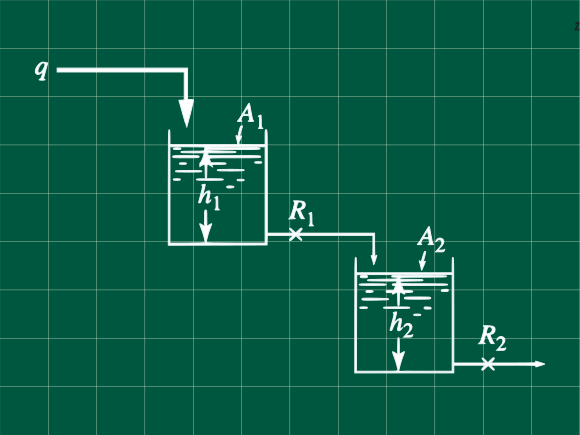

Problema 7.3 (Process Systems Analysis and Control - Coughanowr, LeBlanc)

El sistema de tanques mostrado en la figura, opera en estado estacionario, cuando un cambio en el caudal tipo paso unitario o heaviside ocurre en el caudal de ingreso del primer tanque. La respuesta de la altura del segundo tanque es críticamente amortiguada, y toma 1 min en el cambio del nivel en llegar al 50 % de su cambio total.
Si la razón de las áreas seccionales es A1/A2=2 calcular la razón R1/R2.
Calcule la constante de tiempo para ambos tanques.
¿Cuanto tiempo le toma al primer tanque llegar al 90% de su cambio total?
Resolución
Escribamos las ecuaciones de transferencia de cada tanque. Aquí pondremos directamente las ecuaciones de transferencia, las cuales ya han sido deducidas en los anteriores problemas.
Para el primer tanque tenemos
Q(s)H1(s)=A1R1s+1R1 ... (1)
Para el segundo tanque
Q1(s)H2(s)=A2R2s+1R2 ... (2)
Pero sabemos que:
Q1(s)=R1H1(s)
Reemplazando en (2)
H1(s)H2(s)R1=A2R2s+1R2 ... (3)
Multiplicando (3) y (1)
Q(s)H2(s)=(A2R2s+1)(A1R1s+1)R2
haciendo τ1=A1R1 y τ2=A2R2
Q(s)H2(s)=(τ2s+1)(τ1s+1)R2 ... (4)
Operando para compararlo con un modelo de sistema de segundo orden
Q(s)H2(s)=τ1τ2+(τ1+τ2)s+1R2
Comparando con un sistema de segundo orden
X(s)Y(s)=τ2s2+2ζτs+11
ζ<1ζ=1ζ>1Subamortiguado u oscilatorioCrıˊticamente amortiguadoSobreamortiguado o no oscilatorio
Cuando ζ=1 sabemos que las raices son iguales, es decir para la ecuación (4) las constantes de tiempo son iguales para ambos tanques, pero igual operaremos para demostrarlo.
Comparando los denominadores de las dos anteriores ecuaciones con ζ=1 tenemos
τ1+τ2=2ζτ=2ττ2=τ1τ2
Operando
(τ1−τ2)2=0
De donde se deduce que τ1=τ2=τ
Con esta igualda deducimos la relación R1/R2
τ1=τ2A1R1=A2R2
A2A1=2=R1R2
R1/R2=1/2
Del enunciado, se nos indica que hay un cambio en el caudal de entrada(un cambio tipo escalón unitario), esto es con M como la magnitud del cambio:
Q(s)=sM
Reemplazando en la ecuación (4) y sabiendo que τ1=τ2=τ
H2(s)=sM(τs+1)2R2... (5)
Expandiendo el segundo miembro de la ecuacióne en fracciones parciales (Nota: tambien puede usar tablas para hallar la transformada directamente)
s(τs+1)21=sA+τs+1B+(τs+1)2C
Operando
1=A(τs+1)2+Bs(τs+1)+Cs... α
Seleccionando s apropiadamente
Para s=0, A=1
Para s=−1/τ, C=−τ
Operando α para hallar B
0s2+0s+1=(Bτ+τ2)s2+(2τ+B+C)s+1
Comparando los terminos que acompañan a s2 determinamos que B=−τ
Reemplazando A, B y C en nuestra ecuación (5) expresada con fracciones parciales.
H2(s)=MR2(=s1−τs+1τ−(τs+1)2τ)
Aplicando la antitransformada de Laplace y operando
H2(t)=MR2[1−(1+τt)e−t/τ]
Para hallar el cambio total hacemos que t→∞, hallamos que H2(t→∞)=MR2
Del enunciado nos indican que para cuando t = 1, el tanque dos alcanza 50% de su cambio total. Reemplazando ese dato tenemos [t=1,H(t=1)=0.5MR2]:
0.5⋅MR2=MR2[1−(1+τ1)e−1/τ]
Simplificando
21=(1−τ1)e−1/τ... β
Usemos la expansión en series de Taylor truncada de primer orden.
f(x)=f(x0)+f′(x0)(x−x0)
Aplicada a la función f(x)=e−x con x0=0 se tiene:
e−x=e−0−e−0(x−0)
e−x=1−x
Reemplazando en el ecuación β
21=(1−τ1)2
Despejando y recordando que el x2=∣x∣
τ=2±12
Obtenemos dos soluciones
τa=0.58578τb=3.41421
Para escoger un valor de τ reemplazamos en la ecuación original y aquel que nos dé una aproximación mejor sera escogida
Reemplazando τ=τa=0.58578 en la ecuación β
0.5≈−0.12826
Para τ=τb=3.41421 en la ecuación β
0.5≈0.5276
Entonces nuestra constante de tiempo para ambos tanques es τ1=τ2=3.41421
Nota: Si desea una valor exacto de la solución para τ puede usar métodos númericos como el de Newton-Raphson, pero como incluso las funciones tranferencia son simplemente aproximaciones de un sistema real, no tiene mucho sentido usar valores exactos para la solución de funciones aproximadas, pues estas como sun nombre indica son funciones aproximadas.
Para saber a que tiempo el tanque 1 alcanza 90 % de su cambio total cuando Q(s)=M/s y τ=A1R1 operamos en la ecuación (1)
H1(s)=s(τs+1)MR1
H1(s)=MR1(s(τs+1)1+τs−τs)
H1(s)=MR1(s1−s+1/τ1)
Aplicando la antitransformada
H1(t)=MR1(1−e−t/τ)
Sabemos que cuando H1(t→∞)=MR1 corresponde al cambio total. Nos piden hallar t90% sabiendo que H(t90%)=0.9MR1. Reemplazando en la ecuación anterior
0.9MR1=MR1(1−e−t90%/τ)
t90%=τln(10)
t90%=0.6744 min
Referencias
Coughanowr, D. R.; LeBlanc, S. E. (2009). Process Systems Analysis and Control (3rd edition). McGraw-Hill. ISBN 978-0-07-339789-4.